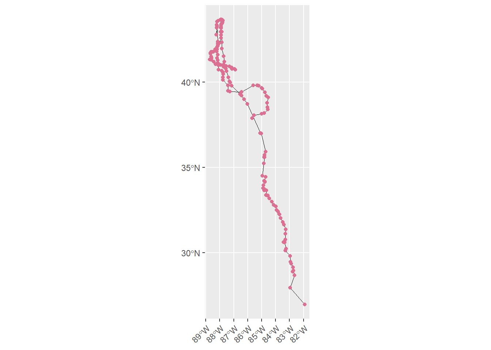
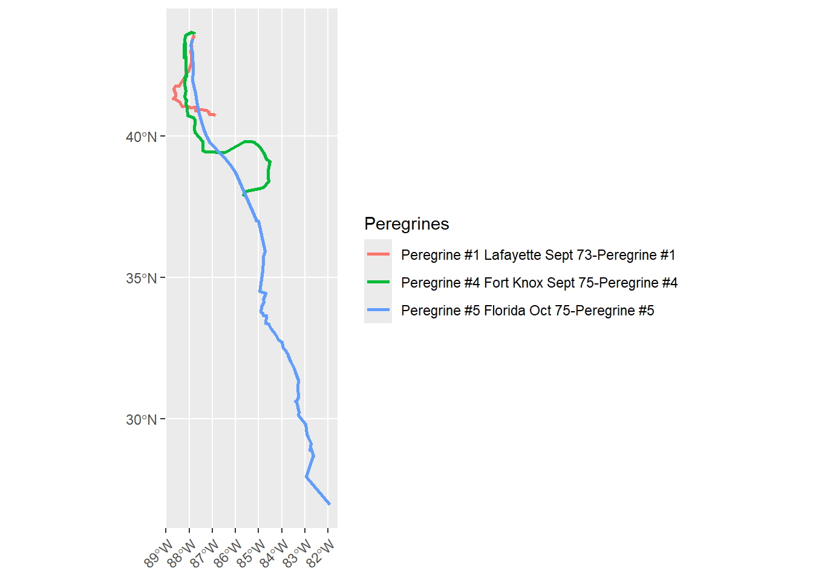
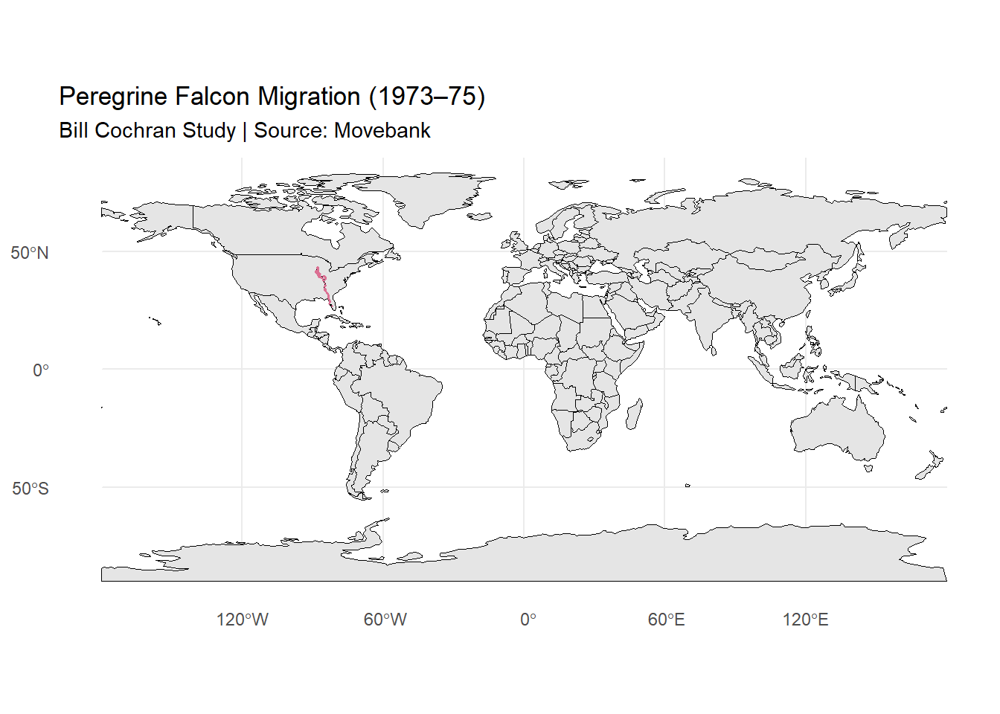
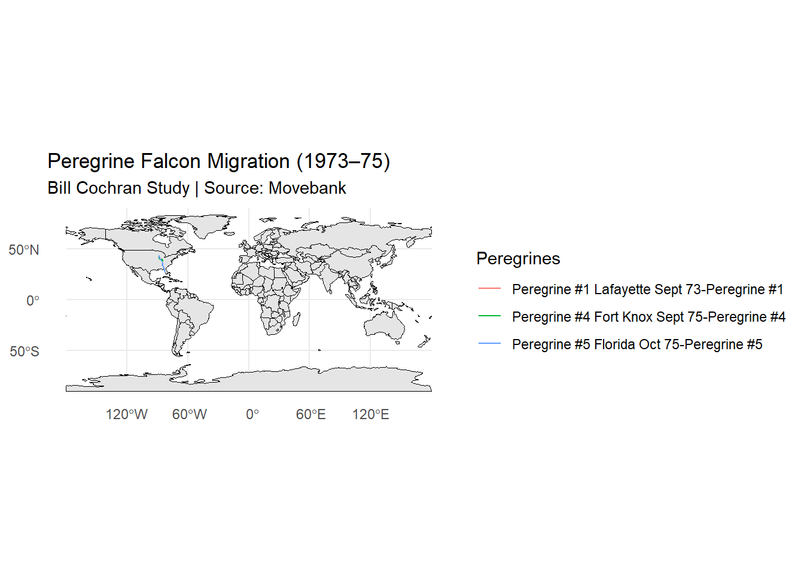
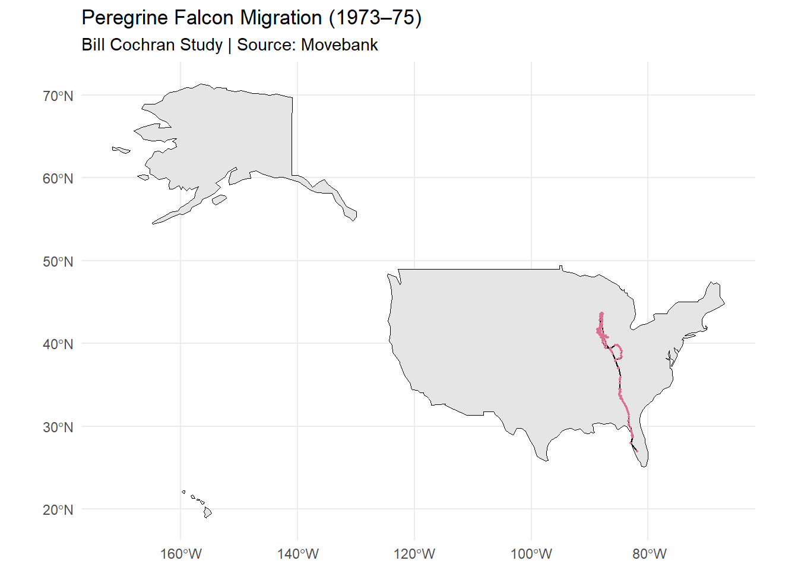
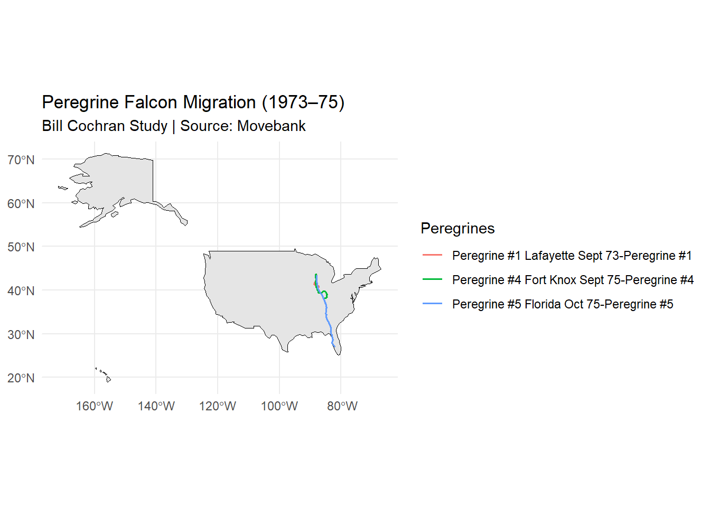
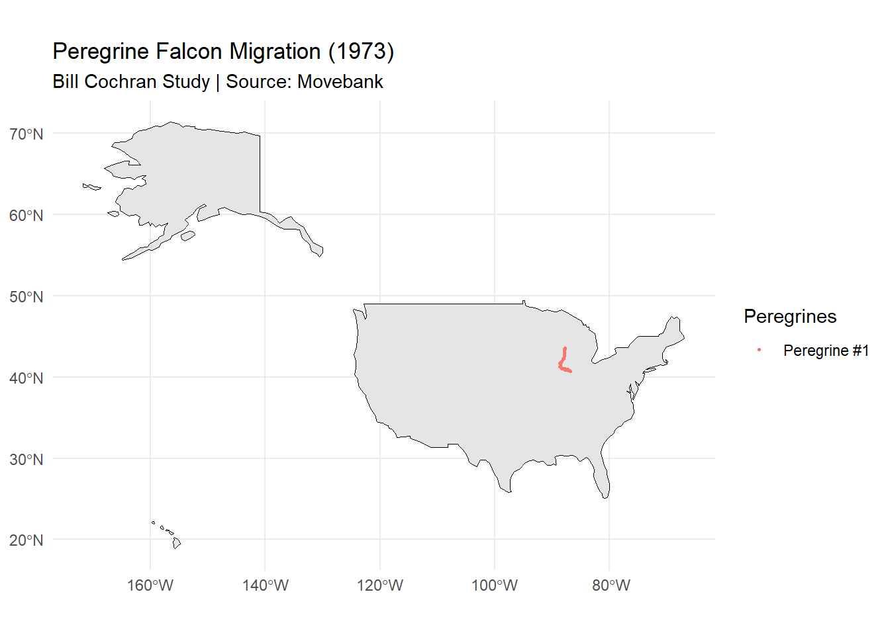
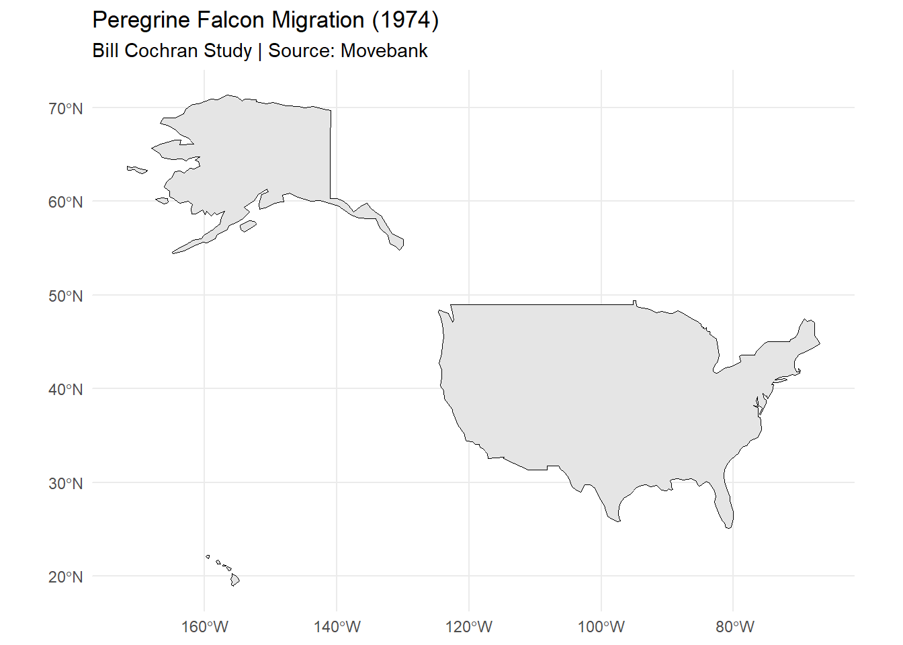
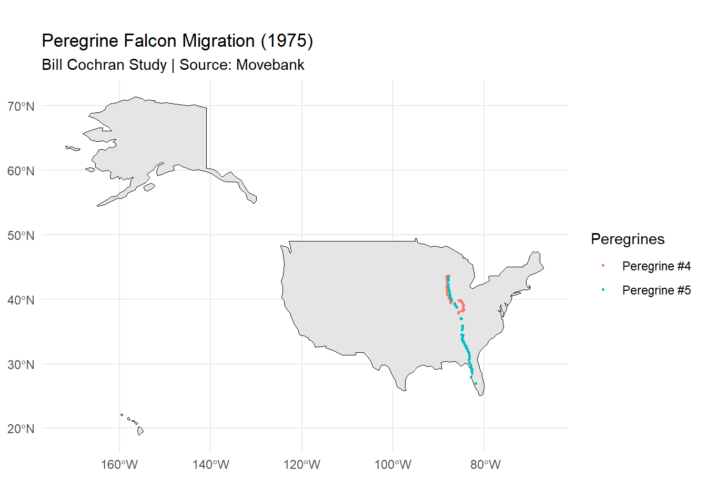

library(rnaturalearth)
library(rnaturalearthdata)
# Run this in your console first
# devtools::install_github("ropensci/rnaturalearthhires")
library(rnaturalearthhires)
# Plotting Maps
library(tidyverse) # Maps using ggplot() + geom_sf()
library(ggformula) # Maps using gf_sf()
library(tmap) # Thematic Maps, static and interactive
library(tmaptools)
library(tmap.mapgl)
library(osmdata) # Fetch map data from osmdata.org
library(sfheaders) # Handcrafted Map data
## Interactive Maps
library(leaflet) # interactive Maps
library(leaflet)
library(leaflet.providers)
library(leaflet.extras)
library(threejs) # Globe maps in R. Part of the htmlwidgets family of packages
# For Spatial Data Frame Processing
library(sf)
library(sfheaders)Peregrine Falcons
Studying Migration Patterns of Peregrine Falcons from 1973-75
1. Setting up R Packages
2. Reading the data
lines <- st_read("C:/Users/puron/OneDrive/Documents/Project Blog/posts/data/peregrine_data/lines.shp")Reading layer `lines' from data source
`C:\Users\puron\OneDrive\Documents\Project Blog\posts\data\peregrine_data\lines.shp'
using driver `ESRI Shapefile'
Simple feature collection with 3 features and 1 field
Geometry type: LINESTRING
Dimension: XY
Bounding box: xmin: -88.70584 ymin: 26.96268 xmax: -81.91663 ymax: 43.65758
Geodetic CRS: WGS 84points <- st_read("C:/Users/puron/OneDrive/Documents/Project Blog/posts/data/peregrine_data/points.shp")Reading layer `points' from data source
`C:\Users\puron\OneDrive\Documents\Project Blog\posts\data\peregrine_data\points.shp'
using driver `ESRI Shapefile'
Simple feature collection with 169 features and 11 fields
Geometry type: POINT
Dimension: XY
Bounding box: xmin: -88.70584 ymin: 26.96268 xmax: -81.91663 ymax: 43.65758
Geodetic CRS: WGS 84head(lines)Simple feature collection with 3 features and 1 field
Geometry type: LINESTRING
Dimension: XY
Bounding box: xmin: -88.70584 ymin: 26.96268 xmax: -81.91663 ymax: 43.65758
Geodetic CRS: WGS 84
name geometry
1 Peregrine #1 Lafayette Sept 73-Peregrine #1 LINESTRING (-87.78953 43.56...
2 Peregrine #4 Fort Knox Sept 75-Peregrine #4 LINESTRING (-87.77338 43.60...
3 Peregrine #5 Florida Oct 75-Peregrine #5 LINESTRING (-87.83723 43.43...head(points)Simple feature collection with 6 features and 11 fields
Geometry type: POINT
Dimension: XY
Bounding box: xmin: -87.87108 ymin: 43.41047 xmax: -87.78953 ymax: 43.56768
Geodetic CRS: WGS 84
timestamp long lat
1 1973-09-20 14:35:00 -87.78953 43.56768
2 1973-09-20 14:40:00 -87.79876 43.54291
3 1973-09-20 14:45:00 -87.80587 43.49956
4 1973-09-20 14:52:00 -87.80594 43.49399
5 1973-09-20 14:56:00 -87.83079 43.49853
6 1973-09-20 15:00:00 -87.87108 43.41047
comments
1 Release location Peregrine #1:Immature male 587 g:Trapped in Cedar Grove Hawk Research Station:Wind N at 5 MPH
2 <NA>
3 Altitude 120 m above ground:Soaring - gains altitude:Circling and then gliding ro south
4 <NA>
5 20/9/1973 10:58 bird losing altitude fast
6 Bird is 160 degrees magnetic compass direction:Gaining height
sensor_typ individual tag_ident
1 radio-transmitter Falco peregrinus Peregrine #1
2 radio-transmitter Falco peregrinus Peregrine #1
3 radio-transmitter Falco peregrinus Peregrine #1
4 radio-transmitter Falco peregrinus Peregrine #1
5 radio-transmitter Falco peregrinus Peregrine #1
6 radio-transmitter Falco peregrinus Peregrine #1
ind_ident
1 Peregrine #1 Lafayette Sept 73
2 Peregrine #1 Lafayette Sept 73
3 Peregrine #1 Lafayette Sept 73
4 Peregrine #1 Lafayette Sept 73
5 Peregrine #1 Lafayette Sept 73
6 Peregrine #1 Lafayette Sept 73
study_name date time
1 Bill Cochran Peregrine falcon migration 1973-75 <NA> <NA>
2 Bill Cochran Peregrine falcon migration 1973-75 <NA> <NA>
3 Bill Cochran Peregrine falcon migration 1973-75 <NA> <NA>
4 Bill Cochran Peregrine falcon migration 1973-75 <NA> <NA>
5 Bill Cochran Peregrine falcon migration 1973-75 <NA> <NA>
6 Bill Cochran Peregrine falcon migration 1973-75 <NA> <NA>
geometry
1 POINT (-87.78953 43.56768)
2 POINT (-87.79876 43.54291)
3 POINT (-87.80587 43.49956)
4 POINT (-87.80594 43.49399)
5 POINT (-87.83079 43.49853)
6 POINT (-87.87108 43.41047)st_geometry_type(lines)[1] LINESTRING LINESTRING LINESTRING
18 Levels: GEOMETRY POINT LINESTRING POLYGON MULTIPOINT ... TRIANGLEst_geometry_type(points) [1] POINT POINT POINT POINT POINT POINT POINT POINT POINT POINT POINT POINT
[13] POINT POINT POINT POINT POINT POINT POINT POINT POINT POINT POINT POINT
[25] POINT POINT POINT POINT POINT POINT POINT POINT POINT POINT POINT POINT
[37] POINT POINT POINT POINT POINT POINT POINT POINT POINT POINT POINT POINT
[49] POINT POINT POINT POINT POINT POINT POINT POINT POINT POINT POINT POINT
[61] POINT POINT POINT POINT POINT POINT POINT POINT POINT POINT POINT POINT
[73] POINT POINT POINT POINT POINT POINT POINT POINT POINT POINT POINT POINT
[85] POINT POINT POINT POINT POINT POINT POINT POINT POINT POINT POINT POINT
[97] POINT POINT POINT POINT POINT POINT POINT POINT POINT POINT POINT POINT
[109] POINT POINT POINT POINT POINT POINT POINT POINT POINT POINT POINT POINT
[121] POINT POINT POINT POINT POINT POINT POINT POINT POINT POINT POINT POINT
[133] POINT POINT POINT POINT POINT POINT POINT POINT POINT POINT POINT POINT
[145] POINT POINT POINT POINT POINT POINT POINT POINT POINT POINT POINT POINT
[157] POINT POINT POINT POINT POINT POINT POINT POINT POINT POINT POINT POINT
[169] POINT
18 Levels: GEOMETRY POINT LINESTRING POLYGON MULTIPOINT ... TRIANGLE3. Plotting the migration patterns
ggplot() +
geom_sf(data = lines, color = "black",
linewidth = 0.025) +
geom_sf(data = points, color = 'palevioletred', linewidth = 0.5) +
theme(
axis.text.x = element_text(angle = 45, hjust = 1)
)
4. Migration patterns of 3 peregrine falcons
ggplot() +
geom_sf(data = lines,aes(color = name),
linewidth = 1) +
labs(color = "Peregrines") +
theme(
axis.text.x = element_text(angle = 45, hjust = 1)
)
Inferences
All three falcons follow a general north-to-south migration pattern through central North America.The clustering of points suggests that there are multiple stopover sites where falcons remained stationary for extended periods.
Peregrine #5 shows the longest and most extensive migration, traveling the farthest south. Peregrine #1 has a much shorter route, primarily clustered in the northern portion around. Peregrine #4 shows an intermediate pattern with looping behaviour, this suggests that the bird was flying within a relatively small area rather than continuing its southward migration.
Assumptions: - There were favourable hunting grounds - Energy conservation - It was waiting for favorable migration conditions
5. Plotting the migration patterns on the world map
ggplot() +
geom_sf(data = World, fill = "grey90", color = "black") +
geom_sf(data = lines, color = "black", linewidth = 0.5) +
geom_sf(data = points, color = "palevioletred", size = 0.2) +
coord_sf() +
labs(title = "Peregrine Falcon Migration (1973–75)",
subtitle = "Bill Cochran Study | Source: Movebank") +
theme_minimal()
ggplot() +
geom_sf(data = World, fill = "grey90", color = "black") +
geom_sf(data = lines,aes(color = name),
linewidth = 0.5) +
labs(color = "Peregrines") +
coord_sf() +
labs(title = "Peregrine Falcon Migration (1973–75)",
subtitle = "Bill Cochran Study | Source: Movebank") +
theme_minimal()
6. Plotting the migration patterns on the United States of America
ggplot() +
geom_sf(data = World %>% filter(name=="United States of America"),
fill = "grey90", color = "black") +
geom_sf(data = lines, color = "black", linewidth = 0.5) +
geom_sf(data = points, color = "palevioletred", size = 0.3) +
coord_sf() +
labs(title = "Peregrine Falcon Migration (1973–75)",
subtitle = "Bill Cochran Study | Source: Movebank") +
theme_minimal()
ggplot() +
geom_sf(data = World %>% filter(name=="United States of America"),
fill = "grey90", color = "black") +
geom_sf(data = lines,aes(color = name),
linewidth = 0.6) +
labs(color = "Peregrines") +
coord_sf() +
labs(title = "Peregrine Falcon Migration (1973–75)",
subtitle = "Bill Cochran Study | Source: Movebank") +
theme_minimal()
Inferences
This shows us that all migration occurs within the central United States. The migration corridor appears to avoid both coasts, staying inland.
7. Plotting the migration patterns on the United States of America for each year
points_modified <- points %>%
mutate(
year = year(ymd_hms(timestamp)),
year_category = case_when(
year == 1973 ~ "Year_73",
year == 1974 ~ "Year_74",
year == 1975 ~ "Year_75",
TRUE ~ "Other"
)
)Migration patterns in 1973
ggplot() +
geom_sf(data = World %>% filter(name=="United States of America"),
fill = "grey90", color = "black") +
geom_sf(data = points_modified %>% filter(year==1973),
aes(color = tag_ident), size = 0.5) +
labs(color = "Peregrines") +
theme(
axis.text.x = element_text(angle = 45, hjust =2 )
) +
coord_sf() +
labs(title = "Peregrine Falcon Migration (1973)",
subtitle = "Bill Cochran Study | Source: Movebank") +
theme_minimal()
Migration patterns in 1974
ggplot() +
geom_sf(data = World %>% filter(name=="United States of America"),
fill = "grey90", color = "black") +
geom_sf(data = points_modified %>% filter(year==1974),
aes(color = tag_ident), size = 0.5) +
labs(color = "Peregrines") +
theme(
axis.text.x = element_text(angle = 45, hjust =2 )
) +
coord_sf() +
labs(title = "Peregrine Falcon Migration (1974)",
subtitle = "Bill Cochran Study | Source: Movebank") +
theme_minimal()
Migration patterns in 1975
ggplot() +
geom_sf(data = World %>% filter(name=="United States of America"),
fill = "grey90", color = "black") +
geom_sf(data = points_modified %>% filter(year==1975),
aes(color = tag_ident), size = 0.5) +
labs(color = "Peregrines") +
theme(
axis.text.x = element_text(angle = 45, hjust =2 )
) +
coord_sf() +
labs(title = "Peregrine Falcon Migration (1975)",
subtitle = "Bill Cochran Study | Source: Movebank") +
theme_minimal()
Inferences
Only plotted points (resting locations) and not lines (movement) as there is no time stamp for it.
1973: Only one falcon rested, concentrated in a small area in the central United States. Assumption: It completed its migration.
1974: No falcons rested?? Or no falcons tracked?
1975: Both birds showed multiple rest stops along the migration corridor, indicating staged migration strategy. We can assume that bird 1 has completed its migration in 1973 itself.
The spacing between points suggest that falcons migrate in stages rather than continuously.